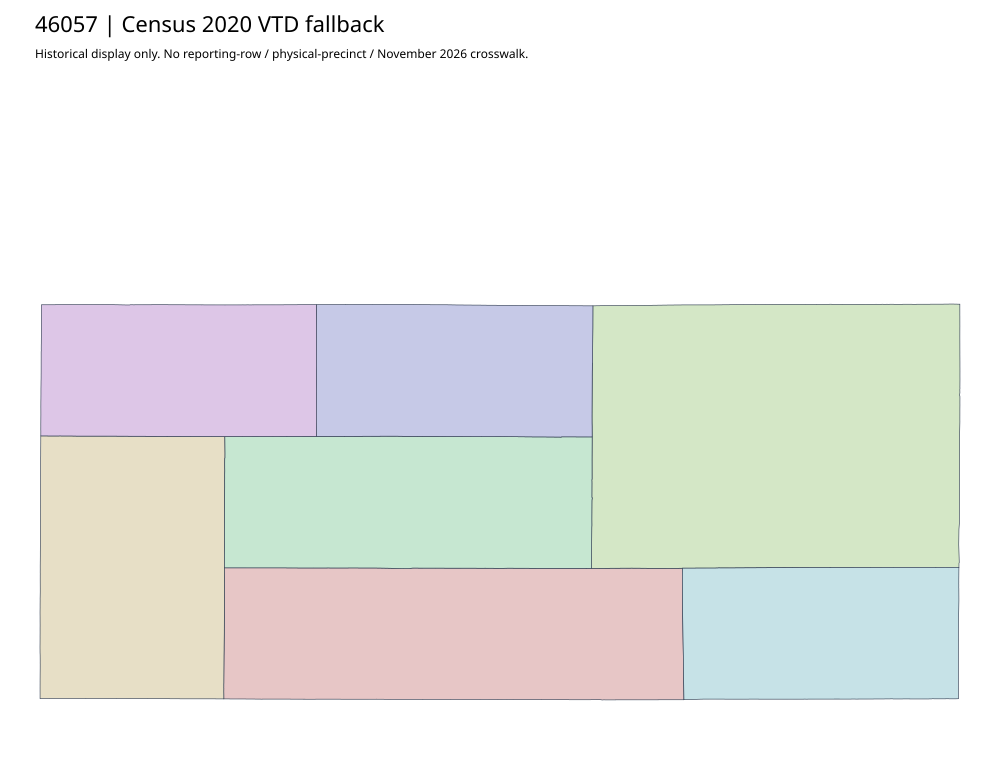

304 ordered indexHamlin | 46057
Official hamlinco.us original/recheck acquired: sparse landing page with no precinct-boundary asset link in captured HTML. The accepted crossing is literal2024 Precinct-26 at worksheet32 row14; that identifier alone cannot join any of the seven Census2020 VTDs. Finer/current match stays unknown.
4 priority / 7 full historical observations. Parent is a summary ancestor, not additive to leaves. No physical feature matches or current reporting crosswalk approved.
Acquired shared-parent assets
No complete county precinct-map original acquired from this bounded chain. Use qualified fallback; roster/landing/error bodies are retained as evidence.
Census2020 fallback
7 native historical VTD features. Entire785-feature ZIP original retained once, all66 counties. Yankton has one countywide VTD. No current/reporting allocation. complete original gzip

Full binary/attribute/geometry QA
Observed authority/acquisition routes
Complete SOS authority fields including original blank/masked values: parent inventory. No contacts were sent.
Ordered full children
- Precinct-21 | 805 source votes | priority
- Precinct-24 | 797 source votes | priority
- Precinct-25 | 563 source votes | priority
- Precinct-26 | 455 source votes | priority
- Precinct-23 | 287 source votes | remainder
- Precinct-02 | 175 source votes | remainder
- Precinct-22 | 144 source votes | remainder